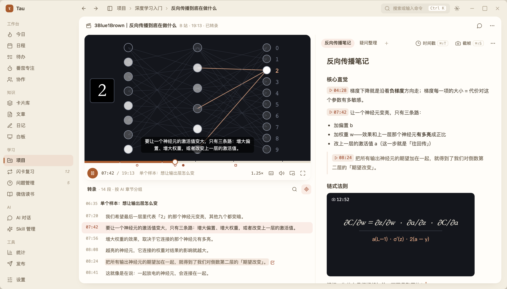
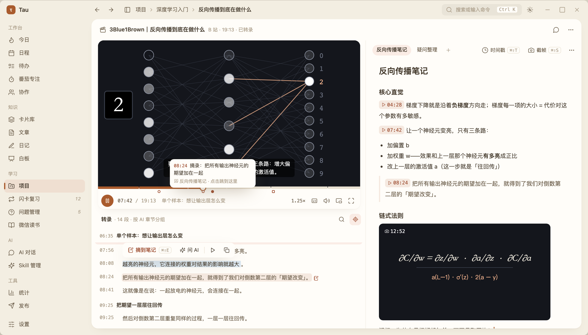
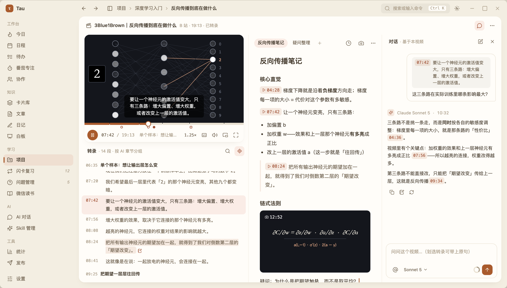

范围：项目里的视频笔记条目（VideoNoteView）。三套版面共用同一套播放器（纸框底栏，已定稿）、同一套笔记编辑器和对话，只是看 / 读 / 写谁当主角不同。每个方案页顶部可以切状态、切窗口宽度、开关项目文档树，窄窗口下的让位顺序也一并演示。
按当前代码梳理（1440 宽窗口、文档树展开时，条目区约 950px）。
只借结构，皮仍是我们的纸面语言。
| 产品 | 值得借的 | 落到我们这里 |
|---|---|---|
| B 站笔记 | 播放页旁开笔记，一键插时间戳 / 截图，点时间戳跳回 | A 的「左看右记」；已有的 ⌘⇧T / ⌘⇧S 保留 |
| Coursera 视频笔记 | 「保存笔记」一次带走当前画面 + 当前字幕 + 时间 | 划词「摘到笔记」：原句 + 时间戳作为引用块插入 |
| YouTube 章节 | 进度条按章节分段，悬停看章节名 | 进度条分段 + 下方笔记刻度 |
| Readwise Reader | 视频旁边是时间同步的转录，可以像文章一样高亮、写笔记，点句跳播 | B 的「文稿」主栏；三案通用的划词工具条 |
| 飞书妙记 / 通义听悟 | 文字随播放高亮；按主题切出章节，每章一个标题 + 摘要 | 转录按 AI 章节分组（待决 ②） |
以下是 1440 宽窗口、文档树收起时的实际界面截图（点图看原图；点标题进可交互页面，能切状态、窗口宽、文档树、深浅色）。对话三案一致：⌘J 打开，条目区 ≥ 1200 停成第三栏，否则作为抽屉盖在笔记上，画面永远不让位。
左栏大画面 + 跟随转录（章节作段头），右栏笔记；对话 ⌘J 打开，够宽停成第三栏。



转录排成文章做主栏，时间在左页边；画面往下读时缩成吸顶迷你条；右栏笔记。
整页笔记，段首时间移到左页边成刻度；右轨是小画面 + 跟随字幕，转录 / 对话在右轨切换。
| 动作 | 现在 | 新 |
|---|---|---|
| 进度条 | 一条通长进度 | 按章节分段（没有章节就是一整段）；下方小圆点标出笔记里的时间戳（空心）/ 摘录（实心）/ 截帧（方块），悬停浮出那段笔记，点击跳播。刻度来自扫描笔记正文里的时间戳节点，不新增表 |
| 转录划词 | 只能点句跳播 | 划选弹工具条：摘到笔记（原句 + 时间戳作为引用块插到笔记光标处，⌘⇧E）/ 问 AI（带进输入框作引用，不自动发送）/ 从这句播放 / 复制；已摘过的句子留浅色底 |
| 跟随滚动 | 上一句在视口里才跟着滚 | 保留这个规则；手动滚走后出「回到当前播放」胶囊，栏头有跟随开关 |
| 多篇笔记 | 标题旁下拉菜单 | 笔记栏头一排胶囊 + 「＋」；只有一篇时只显示这一篇的胶囊 |
| 对话 | 默认占中间；笔记打开后退右栏 | 默认收起，⌘J 开关；回答里引用的时间可点跳播，回答可「插入到笔记」 |
| 窄窗口 | 先收起整个材料栏（视频消失） | 先自动收起项目文档树（一次性提示，可再展开）→ 对话改抽屉 → 画面始终在 |
| 转录中 | 转录区显示进度 | 同现在，另提示「可以先开始记笔记」——时间戳和截帧不依赖转录 |
| 部分 | 改动 |
|---|---|
| 播放器 | @tau/shared 的 VideoPlayer / LocalVideo 加章节分段与刻度插槽（三案都要） |
| 版面 | A：重排 VideoNoteView，MaterialColumn 加宽、NotesStage 常驻右栏、对话改 ⌘J 停靠 / 抽屉。B：新增文稿排版组件（句子并段、页边时间、吸顶迷你条）。C：笔记编辑器给「段首时间戳」做页边渲染 |
| 划词摘录 | TranscriptPanel 支持选区工具条；笔记编辑器新增「插入引用 + 时间戳」命令 |
| AI 章节（若做） | video_note 加章节字段，需同步 schema 校验脚本与 database-schema.md；转录完成后后台生成 |